Every conversion, on the same frame · $7
Pulling saturation to zero gives you one black-and-white image and no say in it. A darkroom printer had a say: a red filter darkens a blue sky, a green filter lifts foliage, an orange filter flatters skin. Each file below is a documented channel weighting, applied to the same photograph.
.cube file through a trilinear
interpolation of its 3D lattice — the same operation the editor performs.
A red flower against a green leaf. Converted by luminance alone, both land on the same grey and the picture dies. A filter is a weighted mix of all three channels at once, so it can separate them — and which filter decides which way round. The numbers are 0–255 output codes read back out of the shipped files.
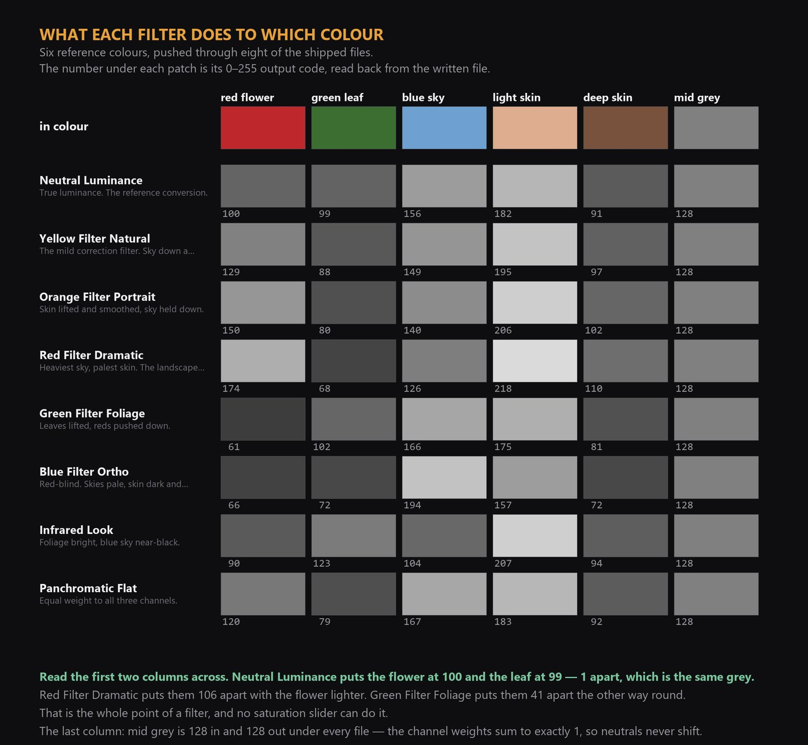
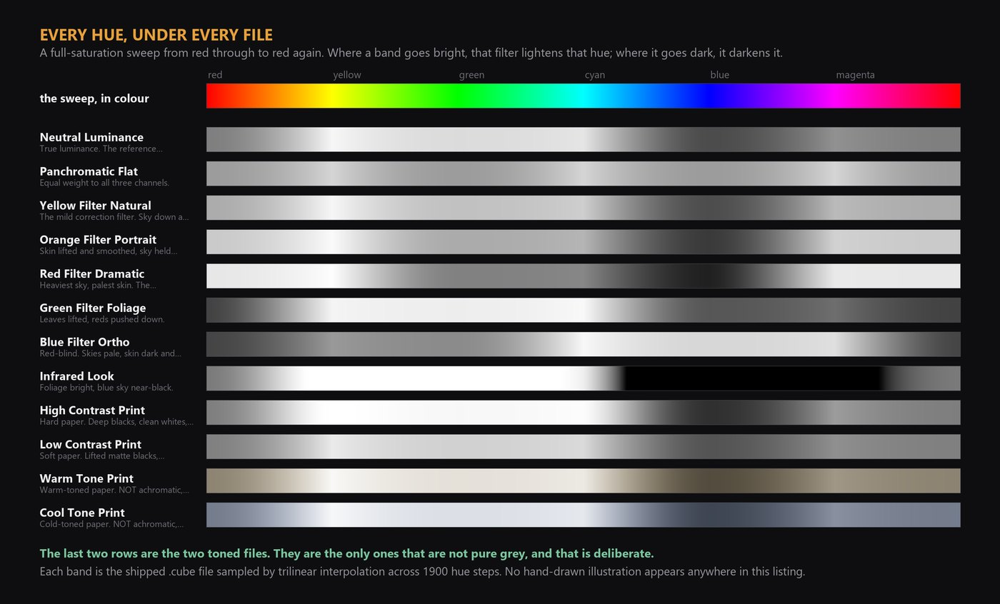
Rec.709 relative luminance weights, mixed in linear light and nothing else done to it. Each colour becomes the grey of the same brightness. Start here, then reach for a filter when two colours collapse onto the same grey.
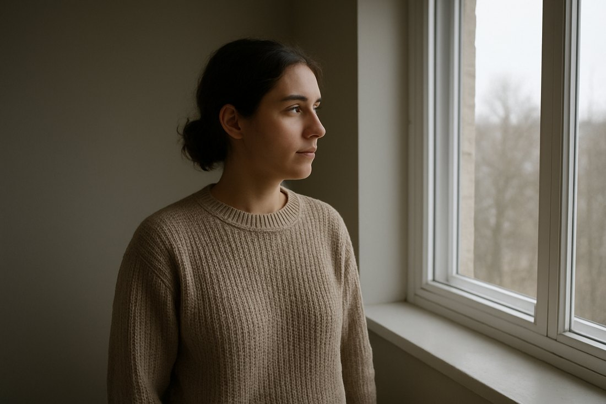
Every channel counted the same, which is the simplest model of an emulsion sensitive right across the visible spectrum. Reds and blues come out lighter than true luminance renders them, greens darker.
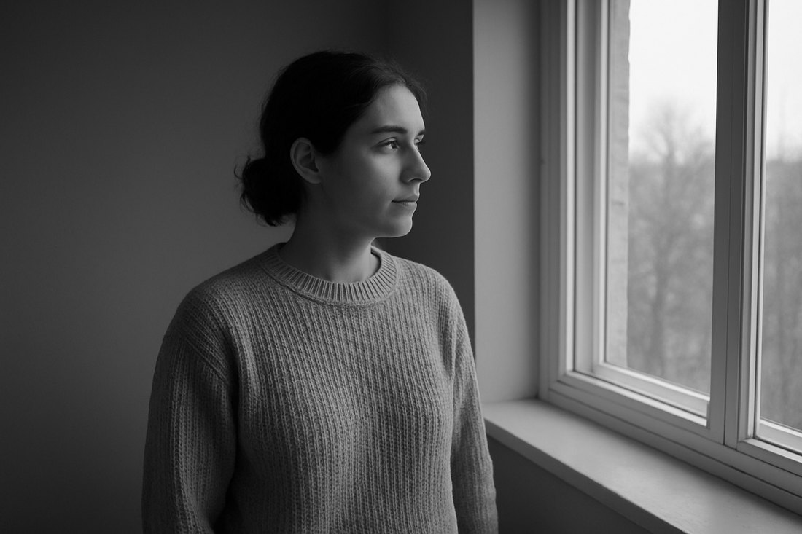
The gentlest of the contrast filters and the one most often left on the lens all day. Blue is cut back, so skies gain some tone and clouds separate, while skin and foliage stay close to where luminance puts them.
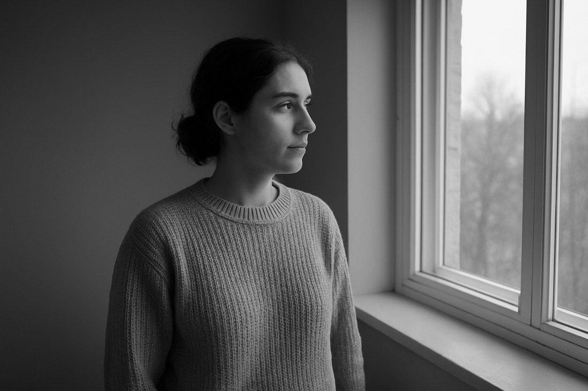
Between yellow and red. Red-toned skin detail - blemishes, broken capillaries, uneven colour - is lightened toward the surrounding tone instead of being drawn as texture, and the sky darkens more than yellow takes it.
Blue is almost entirely removed, so a blue sky falls away and anything red jumps forward. The strongest of the classic filters and the easiest to overdo: skin goes very pale and green foliage goes very dark.
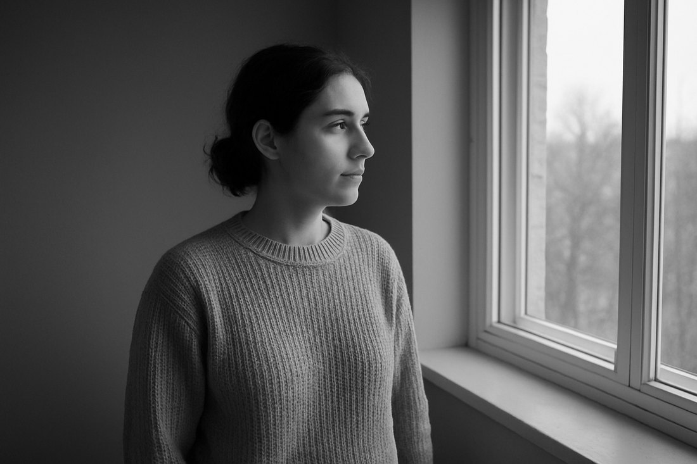
The opposite instrument to the red filter. Foliage separates from everything around it and red subjects go dark. On faces it does the reverse of orange: it draws skin texture rather than smoothing it, which is sometimes exactly what a portrait wants.
Early photographic emulsions were insensitive to red light, which is why portraits from that era show dark lips and heavy skin texture and why their skies are blank white paper. This weighting reproduces that tonal signature by starving the red channel.
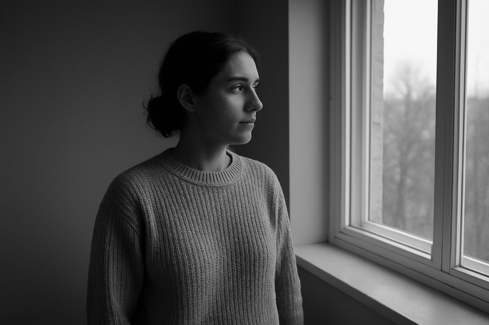
An approximation of the TONAL signature of infrared film: foliage renders very bright, blue sky renders dark. This is the only look in the pack with a NEGATIVE channel weight - blue is subtracted rather than added, which is the only way a lookup table can push a blue sky down while lifting green. The three weights still sum to exactly 1, so neutral greys pass through untouched. It cannot reproduce the halation glow around highlights that real infrared film shows: that is a spatial effect, and a lookup table has no neighbouring pixels to work with.
Luminance conversion driven through a strong S-curve, the way a hard grade of printing paper behaves. Good for graphic, high-key subjects and for rescuing flat footage; punishing on anything that needs shadow detail.
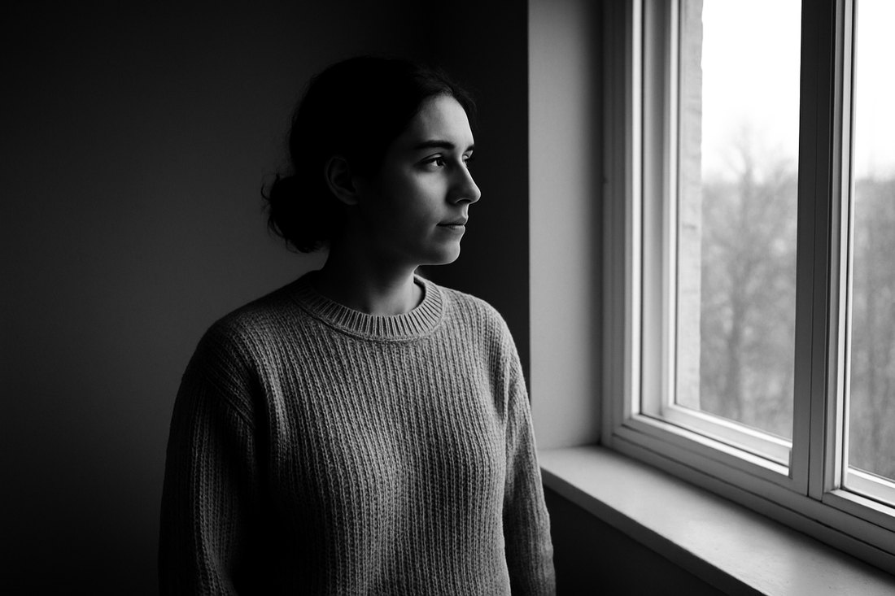
The soft grade: the black point is raised and the white point pulled down, so the whole image sits inside a narrower band. Reads as an old print behind glass. Deliberately refuses to make a true black.
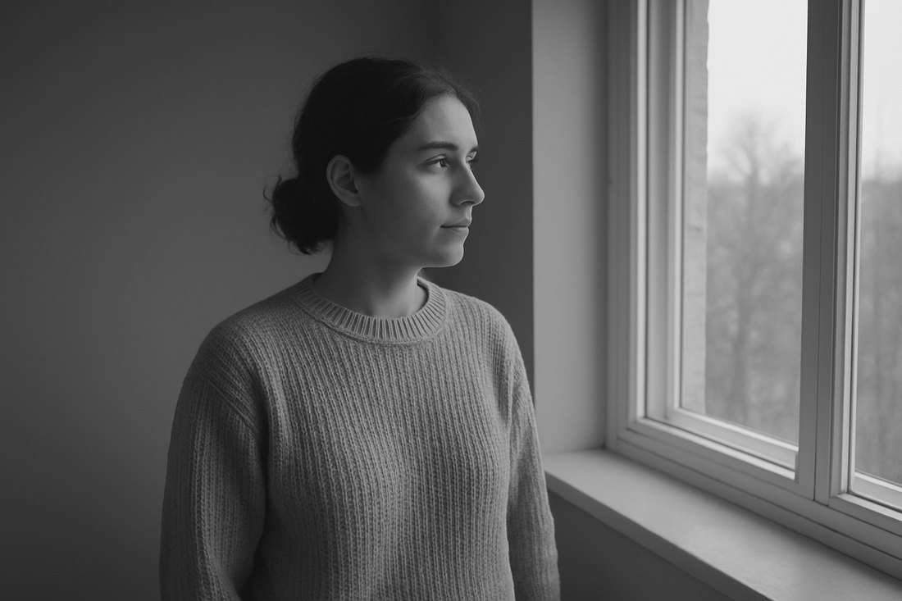
A neutral conversion carrying a warm brown tone through the midtones. The tone is scaled by a bell curve that reaches zero at both ends, so pure black and pure white stay neutral and only the middle of the scale takes the colour. Warm Tone and Cool Tone are the only two files here that are not pure grey, and that is the point of them.
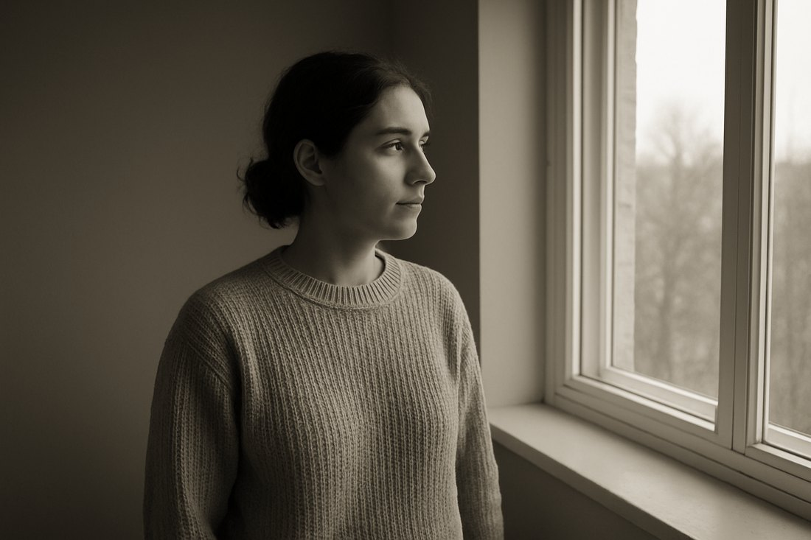
The same construction as the warm tone, pushed the other way: a blue-grey cast through the midtones, black and white left neutral. Suits architecture, winter and anything that should feel unwelcoming.
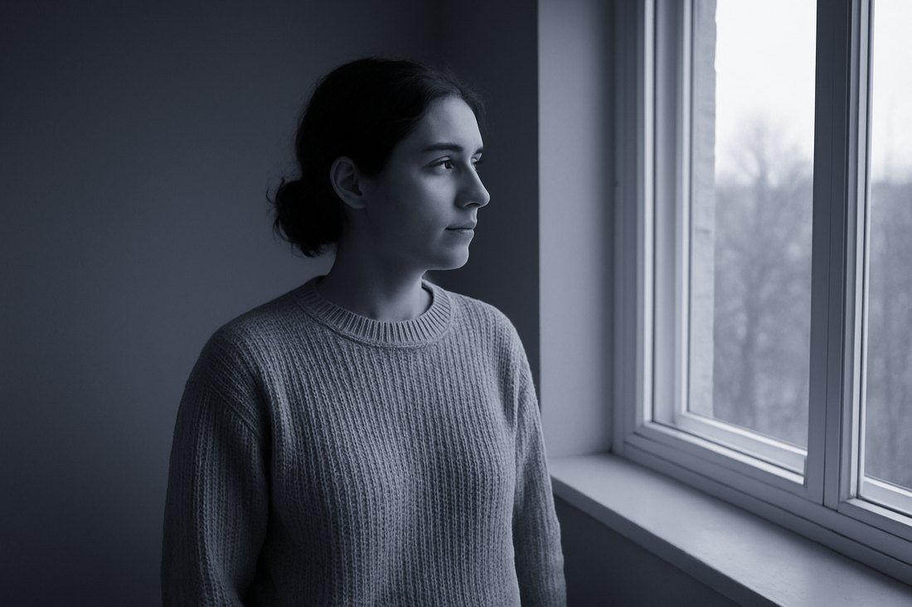
.cube files..cube is the standard interchange
format for 3D LUTs and is what LUT packs for Final Cut Pro ship as. Apple's public
documentation describes importing a "3DLUT file" and does not publish a list of
accepted extensions, so that claim rests on the format's ubiquity rather than on a line
in Apple's manual.12 .cube files.
No plugin, no installer, no account. Also works in Premiere, DaVinci Resolve and
Affinity.